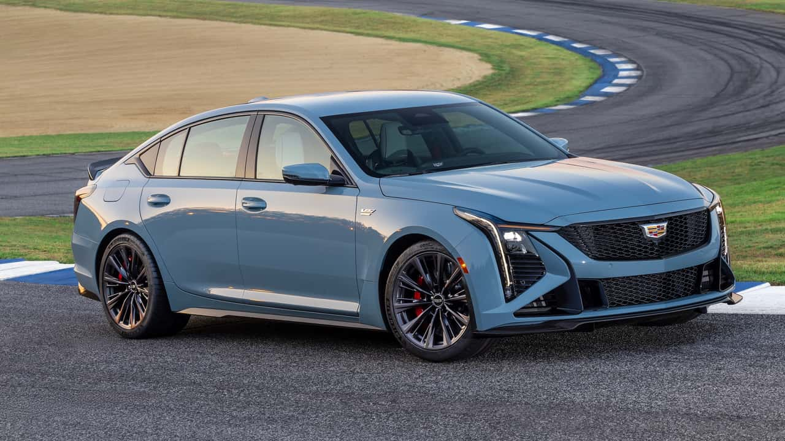
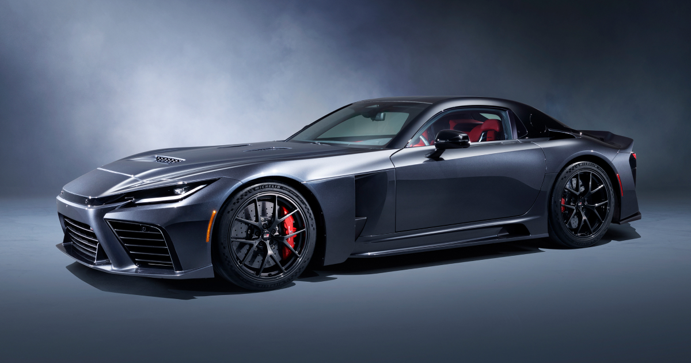
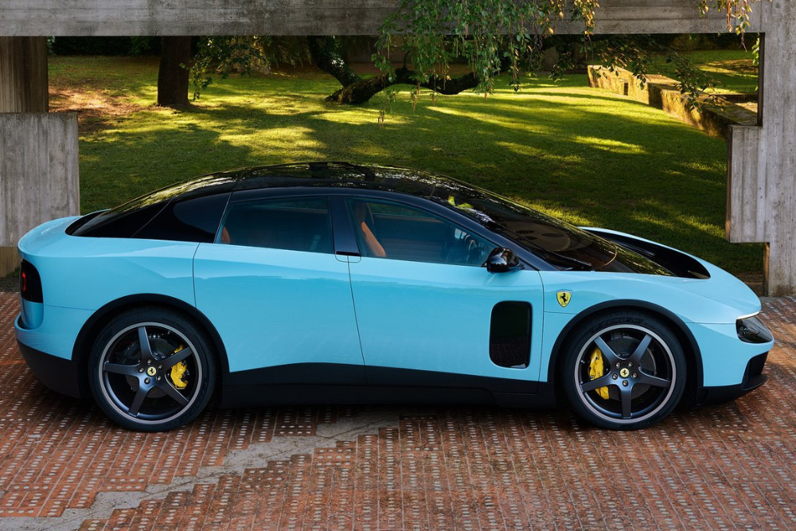

The automotive industry is changing quickly as manufacturers experiment
with new technology, revisit older ideas, and compete for the attention
of different types of buyers. Some recent cars stand out not only because
of their performance, but because of what they represent for their brands
and the larger automotive market.
These four vehicles caught my attention for very different reasons.
They include a high-performance American sedan, one of the world's most
popular electric vehicles, an upcoming Toyota flagship, and Ferrari's
first fully electric production car.
Cadillac CT5-V Blackwing

The Cadillac CT5-V Blackwing stands out because it feels like an
unexpected return to old-school American performance. Its supercharged
6.2-liter V8 produces 668 horsepower, and Cadillac still offers the car
with a six-speed manual transmission.
What makes the Blackwing especially interesting is that Cadillac has
created a sedan capable of competing with some of the world's best
performance cars while still offering luxury and everyday usability.
It represents a surprising performance comeback for a brand that many
people traditionally associate more with comfort than track capability.
Tesla Model Y
The Tesla Model Y stands out because of how common and recognizable it
has become in the electric vehicle market. Its combination of range,
technology, charging infrastructure, and practicality has made it an
extremely popular choice among EV buyers.
Incentives, rebates, and changing EV prices have also made vehicles like
the Model Y more accessible to certain buyers over time. Its popularity
shows how quickly electric vehicles have moved from being unusual
alternatives to becoming normal everyday cars in many communities.
Toyota GR GT

The Toyota GR GT stands out because it represents a major new chapter
for Toyota's performance division. Developed as a new flagship sports
car, it uses a twin-turbocharged 4.0-liter V8 combined with a hybrid
system and has been designed with motorsport performance at its core.
The excitement surrounding the GR GT reminds me of the reputation built
by cars such as the Toyota 2000GT and Lexus LFA. It feels symbolic of
Toyota placing greater emphasis on exciting enthusiast vehicles and
showing that the company still wants to create cars that generate
serious hype among performance-car fans.
Ferrari Luce

The Ferrari Luce may be one of the most significant cars in Ferrari's
history because it is the company's first fully electric production
vehicle. It represents Ferrari entering a completely new era while
attempting to preserve the performance and driving experience expected
from the brand.
Its design has also made it one of the most polarizing new Ferraris.
Instead of following the proportions of a traditional Ferrari supercar,
the Luce uses an unconventional four-door, five-seat design. Whether
people love it or dislike it, the reaction surrounding the Luce makes
it one of the most interesting cars to watch.
Why These Cars Matter
These cars show how many different directions the automotive industry
is moving at the same time. Cadillac is still building a supercharged
V8 performance sedan while Tesla continues pushing electric vehicles
into the mainstream.
At the same time, Toyota is investing in a new high-performance flagship,
while Ferrari is entering the fully electric market for the first time.
I think this variety is part of what makes the current automotive market
so interesting.
Connect With Me
If you want to talk about cars, technology, or anything else I am
learning about, feel free to connect with me.